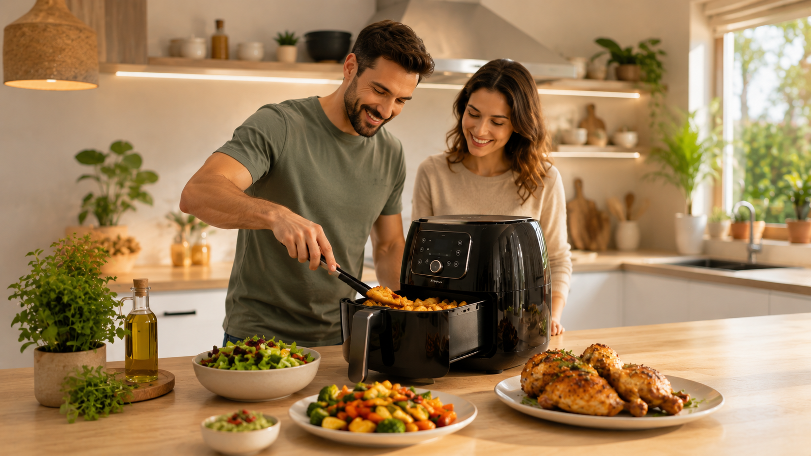

Como escolher uma air fryer para sua casa
Aprenda a escolher uma air fryer considerando capacidade, potência, funções, facilidade de limpeza, espaço disponível, marcas, preço e custo-benefício para diferentes perfis de uso.

A air fryer se tornou um dos eletrodomésticos mais desejados por quem busca praticidade na cozinha. Ela ajuda a preparar alimentos com menos óleo, reduz a sujeira no fogão e facilita refeições rápidas no dia a dia.
Mas escolher uma boa air fryer exige atenção. Antes de comprar, é importante entender qual modelo combina com sua rotina, o tamanho da sua família, o espaço disponível na cozinha e o orçamento.
Neste guia do MigueCaue Recomenda, você vai ver como avaliar capacidade, potência, funções, limpeza, marcas, preço e custo-benefício para fazer uma compra mais segura e inteligente.
Por que uma air fryer pode transformar sua rotina na cozinha?
A grande vantagem da air fryer está na combinação de praticidade, rapidez e versatilidade. Ela permite preparar batatas, carnes, frango, legumes, pão de queijo, salgados, empanados e até algumas receitas doces com menos sujeira e, em muitos casos, usando pouco ou nenhum óleo.
Para quem tem uma rotina corrida, o aparelho pode representar uma mudança significativa: menos tempo no fogão, menos panelas para lavar e mais facilidade para preparar refeições simples durante a semana.
1. Escolha a capacidade ideal para sua casa
A capacidade é um dos primeiros pontos a observar. Comprar uma air fryer pequena demais pode gerar frustração, porque será necessário preparar os alimentos em várias rodadas. Por outro lado, um modelo muito grande pode ocupar espaço desnecessário e consumir mais energia do que você precisa.
3 a 4 litros
Indicada para quem mora sozinho, casais ou pessoas que pretendem preparar pequenas porções. É uma boa opção para batatas, nuggets, pão de queijo, legumes e lanches individuais.
4,5 a 5,5 litros
É uma das faixas mais equilibradas para famílias pequenas ou médias. Permite preparar quantidades maiores sem ocupar tanto espaço na bancada.
Acima de 6 litros
Indicada para famílias maiores ou para quem gosta de preparar carnes, frango em pedaços maiores e porções para várias pessoas.
| Capacidade | Indicação | Perfil de uso |
|---|---|---|
| 3 a 4 litros | 1 a 2 pessoas | Uso individual, lanches e pequenas porções |
| 4,5 a 5,5 litros | 2 a 4 pessoas | Uso familiar moderado e receitas variadas |
| 6 litros ou mais | 4 pessoas ou mais | Famílias maiores e preparo de porções grandes |
2. Verifique a potência e o desempenho
A potência influencia diretamente no tempo de preparo e na eficiência da air fryer. Modelos mais potentes tendem a aquecer mais rápido e preparar os alimentos com melhor textura, especialmente quando o cesto está mais cheio.
Em geral, air fryers domésticas variam aproximadamente entre 1200 W e 2000 W. Para uso diário, modelos a partir de 1400 W já podem entregar desempenho satisfatório, dependendo da capacidade e do projeto interno do aparelho.
3. Avalie as funcionalidades que realmente importam
Muitas air fryers oferecem recursos extras, mas nem todos são essenciais. Antes de pagar mais por um modelo cheio de funções, avalie quais delas serão úteis na sua rotina.
Funções úteis em uma air fryer
- Controle de temperatura: permite ajustar o preparo de diferentes alimentos.
- Timer com desligamento automático: aumenta a segurança e evita que os alimentos passem do ponto.
- Cesto antiaderente: facilita a limpeza e reduz a necessidade de óleo.
- Programas pré-definidos: ajudam quem busca mais praticidade no preparo.
- Painel digital: pode facilitar o uso, embora modelos analógicos também sejam eficientes.
- Peças removíveis: tornam a limpeza mais rápida e prática.
Se você busca uma compra econômica, um modelo com controle de temperatura, timer e bom revestimento antiaderente já pode atender muito bem à maioria das necessidades.
Compra inteligente: não pague mais apenas por funções que você talvez não use. Priorize capacidade adequada, potência coerente, limpeza fácil e boas avaliações.
Ver ofertas de air fryer4. Pense na facilidade de limpeza
Uma air fryer prática precisa ser fácil de limpar. Se o aparelho for trabalhoso demais, a tendência é que ele acabe ficando parado no armário.
Observe se o cesto é removível, se o revestimento antiaderente parece resistente e se há relatos de usuários sobre descascamento, dificuldade de limpeza ou acúmulo de gordura em áreas difíceis de alcançar.
O que observar antes de comprar
- Se o cesto e a bandeja são removíveis.
- Se o revestimento é antiaderente.
- Se há muitas frestas onde a sujeira pode acumular.
- Se o fabricante informa compatibilidade com lava-louças.
- Se consumidores relatam facilidade ou dificuldade na limpeza.
5. Considere o espaço disponível na cozinha
Air fryers maiores podem ser excelentes, mas também ocupam mais espaço. Antes de escolher, pense onde o aparelho ficará: na bancada, dentro de um armário ou em uma área específica para eletrodomésticos.
Se sua cozinha é pequena, talvez um modelo médio seja mais inteligente do que um modelo gigante. O ideal é encontrar equilíbrio entre capacidade interna e tamanho externo.
6. Compare marcas confiáveis e suporte
Marcas conhecidas costumam oferecer maior facilidade para encontrar assistência técnica, peças de reposição e informações sobre garantia. Isso não significa que marcas menos conhecidas sejam ruins, mas exige uma análise mais cuidadosa.
Antes de comprar, verifique:
- Tempo de garantia oferecido pelo fabricante.
- Disponibilidade de assistência técnica no Brasil.
- Reputação da marca em sites de reclamação.
- Avaliações de consumidores em marketplaces.
- Histórico de problemas recorrentes relatados pelos usuários.
7. Entenda a diferença de preços
O preço de uma air fryer pode variar bastante conforme capacidade, marca, potência, acabamento e recursos extras. Modelos mais simples tendem a ser mais baratos, enquanto versões digitais, grandes ou com funções avançadas podem custar mais.
Air fryers mais baratas
Podem ser boas para quem quer começar gastando menos. O cuidado é verificar se o aparelho tem potência adequada, bom cesto antiaderente e avaliações positivas.
Air fryers intermediárias
Costumam oferecer o melhor equilíbrio entre preço, capacidade e recursos. Para a maioria das famílias, essa faixa tende a entregar bom custo-benefício.
Air fryers premium
Geralmente trazem maior capacidade, design mais sofisticado, painel digital, programas automáticos e melhor acabamento. Valem a pena para quem usa com frequência e quer mais conforto.
8. Como escolher de acordo com seu perfil de uso
Para quem mora sozinho
Uma air fryer compacta de 3 a 4 litros pode ser suficiente. Ela ocupa menos espaço e atende bem preparos rápidos.
Para casais
Modelos entre 4 e 5 litros costumam ser uma escolha equilibrada, permitindo porções um pouco maiores sem exagero no tamanho.
Para famílias com crianças
Vale considerar modelos de 5 litros ou mais para preparar lanches, carnes, batatas, legumes e congelados com mais praticidade.
Para quem cozinha todos os dias
Priorize potência, boa capacidade, cesto resistente, limpeza fácil e marca com bom suporte. Nesse caso, pagar um pouco mais pode fazer sentido.
Para quem quer gastar pouco
Busque modelos simples, mas bem avaliados. Evite pagar mais apenas por painel digital ou funções que provavelmente não serão usadas.
Para quem recebe visitas
Modelos acima de 6 litros podem ser mais adequados, pois permitem preparar porções maiores com menos rodadas.
9. Pontos positivos e negativos da air fryer
Pontos positivos
- Facilita o preparo de refeições rápidas.
- Reduz o uso de óleo em diversas receitas.
- Gera menos sujeira do que frituras tradicionais.
- Pode substituir o forno em preparos pequenos.
- É versátil para carnes, legumes, salgados e lanches.
Pontos negativos
- Modelos pequenos podem limitar o preparo para famílias.
- Alguns alimentos podem ficar ressecados se preparados incorretamente.
- Ocupa espaço na bancada ou no armário.
- O cesto antiaderente pode desgastar com mau uso.
- Modelos muito baratos podem ter acabamento inferior.
10. Checklist antes de comprar sua air fryer
Antes de finalizar a compra, use este checklist para revisar os principais pontos de decisão.
Erros comuns ao comprar uma air fryer
Comprar apenas pelo menor preço
Preço baixo pode ser interessante, mas não deve ser o único critério. Se o aparelho tiver baixa potência, cesto frágil ou muitas reclamações, a economia inicial pode virar frustração.
Escolher uma capacidade pequena demais
Esse é um erro frequente. Se você pretende preparar comida para mais de duas pessoas, modelos compactos podem exigir várias rodadas.
Ignorar avaliações negativas
Avaliações negativas podem revelar problemas importantes, como descascamento do cesto, cheiro forte de plástico, limpeza difícil ou falhas após pouco tempo de uso.
Pagar caro por funções pouco úteis
Painel digital e programas automáticos são convenientes, mas não obrigatórios. Às vezes, um modelo simples e bem construído entrega melhor custo-benefício.
Air fryer vale a pena?
Sim, a air fryer pode valer muito a pena para quem busca praticidade, rapidez e preparo com menos óleo. Ela é especialmente útil para pessoas com rotina corrida, famílias que fazem lanches com frequência e quem deseja reduzir a sujeira na cozinha.
Porém, ela não é mágica. O resultado depende do tipo de alimento, da quantidade colocada no cesto, da temperatura usada e da qualidade do aparelho. Por isso, escolher bem faz toda a diferença.
Veredito: como acertar na escolha?
Para escolher uma air fryer para sua casa, comece pela capacidade ideal, avalie a potência, confira a facilidade de limpeza e compare marcas com boa reputação. Depois, analise se os recursos extras justificam o preço.
Para a maioria dos consumidores, uma air fryer intermediária, com boa capacidade, potência adequada, cesto antiaderente e avaliações positivas, tende a ser a escolha mais equilibrada.
Classificação geral da categoria: ★★★★☆ Muito bom
A air fryer é uma excelente aliada para tornar a cozinha mais prática e moderna, desde que a compra seja feita com atenção ao uso real, ao orçamento e à qualidade do produto escolhido.
Perguntas frequentes sobre air fryer
Qual é o melhor tamanho de air fryer para uma família?
Para famílias de 3 a 4 pessoas, modelos entre 4,5 e 5,5 litros costumam oferecer bom equilíbrio. Para famílias maiores, vale considerar opções acima de 6 litros.
Air fryer gasta muita energia?
O consumo depende da potência e do tempo de uso. Apesar de ter potência alta, a air fryer costuma preparar muitos alimentos rapidamente, o que pode equilibrar o consumo em comparação com outros métodos.
Air fryer substitui o forno?
Em muitos preparos pequenos, sim. Ela pode ser mais rápida para batatas, carnes, legumes, salgados e pães. Porém, para receitas grandes, o forno convencional ainda pode ser mais adequado.
É melhor air fryer digital ou analógica?
A digital oferece mais praticidade e visual moderno. A analógica costuma ser mais simples e, em alguns casos, mais barata. Ambas podem ser boas, desde que tenham qualidade e desempenho adequado.
Qual air fryer tem melhor custo-benefício?
A melhor opção de custo-benefício é aquela que combina capacidade adequada, boa potência, limpeza fácil, avaliações positivas e preço justo. O modelo ideal pode variar conforme o perfil do usuário.
Precisa usar óleo na air fryer?
Em muitos alimentos, não é necessário. Em outros, uma pequena quantidade de óleo pode ajudar a melhorar textura e sabor. O uso depende da receita e da preferência de cada pessoa.
Quer comprar com mais segurança?
Antes de decidir, compare preços, avaliações, garantia e capacidade dos modelos disponíveis. Uma boa air fryer pode deixar sua rotina mais prática, mas a melhor compra é aquela que combina com o seu uso real.
Comparar ofertas de air fryer